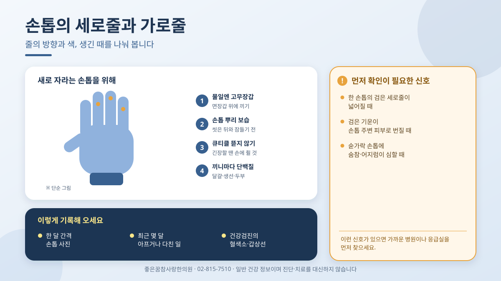

이종호 한의사 감수좋은꿈참사랑한의원 대표원장 (한의사 면허번호 19769)발행 2026-11-26 · 수정 2026-11-26
이 글의 차례
설거지를 마치고 핸드크림을 바르다가 손톱을 가만히 들여다봅니다. 예전에는 반들반들하던 손톱에 가느다란 세로줄이 여러 개 생겨 있고, 엄지손톱에는 가로로 살짝 패인 홈까지 보입니다. 혹시 몸에 무슨 일이 있는 건 아닐까, 괜히 마음이 쓰입니다. 진료실에서 손을 내밀며 이걸 좀 봐 달라고 하시는 분이 꽤 많습니다.
손톱은 몸의 작은 창이라는 말이 있습니다. 손톱은 손톱 뿌리에서 조금씩 자라 나오기 때문에, 그동안 몸에 있었던 일이 흔적처럼 남기도 합니다. 그렇다고 손톱에 줄이 생겼다고 해서 모두 걱정할 일은 아닙니다. 대부분은 나이나 건조함, 손을 많이 쓰는 생활에서 오는 흔한 변화입니다.
중요한 것은 줄의 방향과 모양, 색깔, 그리고 언제부터 생겼는지입니다. 세로줄과 가로줄은 이야기하는 내용이 꽤 다르고, 드물지만 피부과에서 먼저 확인해야 하는 줄도 있습니다. 이것만 구분해 두셔도 쓸데없는 걱정은 덜고, 살펴야 할 것은 놓치지 않을 수 있습니다.
이 글에서는 손톱 줄의 종류별 뜻과 생기는 까닭, 집에서 해 볼 수 있는 관리, 그리고 한의원에서 무엇을 함께 살피는지를 차례로 말씀드리겠습니다.
손톱은 어떻게 자라나요
손톱은 손톱 뿌리, 즉 큐티클 아래 숨어 있는 손톱 바탕에서 만들어져 앞으로 밀려 나옵니다. 손톱은 한 달에 대략 3밀리미터 남짓 자라고, 손톱 전체가 새것으로 바뀌는 데는 반년 가까이 걸립니다. 발톱은 이보다 훨씬 느립니다.
그래서 손톱 끝 쪽에 있는 줄은 몇 달 전의 흔적이고, 뿌리 가까이 있는 줄은 최근의 흔적입니다. 가로줄이 손톱 중간쯤에 있다면 대략 두세 달 전에 무슨 일이 있었는지 떠올려 보시면 실마리가 될 수 있습니다.
손톱 바탕은 피의 흐름과 영양, 몸의 전반적인 상태에 영향을 받습니다. 몸이 크게 지치거나 아프면 손톱을 만드는 일이 잠시 뒤로 밀리고, 그 흔적이 손톱에 남는 것입니다.
반대로 말하면, 몸이 회복되고 생활이 안정되면 새로 자라는 손톱도 다시 고르게 나옵니다. 손톱의 줄은 지나간 일의 기록일 뿐, 지금의 상태를 그대로 보여 주는 것은 아니라는 점을 기억해 두시면 마음이 조금 편해지실 겁니다.
세로줄은 대부분 흔한 변화입니다
손톱 뿌리에서 끝까지 길게 이어지는 가느다란 세로줄은 가장 흔합니다. 나이가 들면서 손톱 바탕의 세포가 고르게 일하지 못해 생기는 경우가 많아서, 주름처럼 자연스러운 변화로 보기도 합니다. 여러 손가락에 고르게 있고 색깔 변화가 없다면 크게 걱정하지 않으셔도 됩니다.
손을 물에 자주 담그거나 세제, 손 소독제를 많이 쓰시는 분, 실내가 건조한 겨울에는 세로줄이 더 도드라져 보입니다. 손톱이 마르면서 겉이 고르지 않게 되기 때문입니다. 이런 분들은 보습만 꾸준히 해도 줄이 덜 눈에 띄는 경우가 많습니다.
손톱 겉을 매끈하게 하려고 버퍼로 자주 갈아 내는 분도 계신데, 너무 자주 갈면 손톱이 얇아져 오히려 갈라지기 쉽습니다. 겉을 다듬는 것은 가끔만 하시고, 보습으로 손톱을 촉촉하게 지켜 주시는 쪽을 권합니다.
다만 손톱 하나에만 굵고 깊은 세로 홈이 생겨 손톱이 갈라지려 하거나, 세로로 검거나 갈색 줄이 생겼다면 이야기가 다릅니다. 이런 경우는 아래에서 따로 말씀드리겠습니다.
왜 손톱에 가로줄이 생길까요
손톱을 가로지르며 살짝 패인 홈이 생기는 경우, 흔히 손톱 바탕이 잠시 일을 멈췄던 흔적으로 봅니다. 높은 열이 나는 감기나 독감을 앓았을 때, 큰 수술을 받았을 때, 식사를 거의 못 할 만큼 몸이 힘들었을 때, 큰 스트레스를 겪었을 때 몇 주 뒤 여러 손톱에 같은 높이로 가로줄이 생기기도 합니다.
여러 손톱에 같은 높이로 줄이 있다면 몸 전체에 있었던 일을, 한두 손톱에만 있다면 그 손가락의 손톱 뿌리 쪽에 있었던 일을 먼저 떠올립니다. 문틈에 손가락을 찧었거나, 큐티클을 세게 밀거나 뜯었거나, 손톱 뿌리를 자꾸 누르는 습관이 있으면 그 손톱에만 물결 같은 가로줄이 생길 수 있습니다.
특히 엄지손톱 가운데에 빨래판처럼 가로줄이 촘촘히 생기고 손톱 뿌리 쪽 피부가 거칠어져 있다면, 긴장할 때 다른 손가락으로 엄지 뿌리를 문지르거나 뜯는 습관이 원인인 경우가 많습니다. 습관을 줄이면 새로 자라는 손톱은 매끈해집니다.
한의학에서는 손톱을 피와 영양이 닿는 끝자리로 보아, 손톱이 거칠고 쉽게 갈라지는 모습을 몸의 피와 진액이 부족해진 상태와 연결해 보기도 합니다. 그래서 손톱만이 아니라 어지럼, 피로, 피부와 머리카락의 건조함을 함께 여쭙습니다.
줄의 모양별로 이렇게 나눠 봅니다
손톱 줄은 모양에 따라 살피는 방향이 다릅니다. 아래를 참고해 내 손톱을 한번 살펴보세요.
- 가느다란 세로줄이 여러 손톱에 고르게: 나이와 건조함에서 오는 흔한 변화
- 여러 손톱에 같은 높이의 가로 홈: 몇 주에서 몇 달 전 몸이 크게 힘들었던 흔적
- 한 손톱에만 물결 같은 가로줄: 손톱 뿌리를 다치거나 뜯는 습관
- 손톱에 하얀 점이나 짧은 하얀 줄: 대개 손톱이 부딪힌 작은 충격의 흔적
- 손톱 하나에 검거나 갈색 세로줄: 피부과에서 확인이 필요한 경우
- 손톱이 얇아지며 숟가락처럼 움푹: 빈혈 등 혈액 검사로 확인이 필요한 경우
하얀 점은 칼슘이 부족해서 생긴다고 알려져 있지만, 실제로는 손톱이 어딘가에 부딪히거나 눌린 작은 충격의 흔적인 경우가 대부분입니다. 손톱이 자라면서 저절로 밀려 나갑니다.
손톱 세로 검은 줄은 왜 꼭 확인해야 하나요
손톱 하나에 갈색이나 검은색의 세로줄이 생기는 경우가 있습니다. 많은 경우는 손톱 바탕의 색소 세포가 조금 더 일한 흔적이거나, 손가락을 부딪혀 생긴 피멍입니다. 피멍은 손톱이 자라면서 앞으로 밀려 나가는 것으로 구분할 수 있습니다.
하지만 줄이 점점 넓어지거나, 색이 고르지 않고 진해지거나, 손톱 주변 피부까지 검게 번진다면 피부과에서 먼저 확인을 받으셔야 합니다. 드물지만 피부암의 한 종류가 손톱에 이렇게 나타나는 경우가 있기 때문입니다. 이런 줄은 한의원보다 피부과가 먼저입니다. 사진을 한 달 간격으로 찍어 두시면 진료 때 변화를 설명하기 쉽습니다.
손톱 줄이 걱정될 때 생활에서 살필 것
손톱의 줄은 이미 생긴 것을 없애기보다, 새로 자라는 손톱이 고르게 나오도록 돕는 쪽으로 생각하시는 것이 좋습니다. 다음 가운데 해당하는 것이 있는지 살펴보세요.
- 하루에도 손을 여러 번 물에 담그거나 세제를 맨손으로 쓰는 경우
- 손 소독제를 자주 쓰고 보습은 거의 하지 않는 경우
- 큐티클을 뜯거나 세게 밀어내는 습관이 있는 경우
- 젤 네일이나 아세톤 제거를 자주 반복하는 경우
- 끼니가 불규칙하고 단백질 반찬이 적은 경우
- 생리량이 많거나 쉽게 어지럽고 지치는 경우
여기에 해당하는 것이 많을수록 손톱이 마르고 거칠어지기 쉽습니다. 특히 물일과 소독제는 손톱 겉을 가장 빨리 상하게 하는 원인이라, 보습과 장갑만 챙겨도 손톱 표면이 한결 매끈해지는 분이 많습니다.
발톱과 아이 손톱에 줄이 보일 때는요
발톱에도 세로줄이나 가로줄이 생깁니다. 발톱은 손톱보다 훨씬 천천히 자라서 흔적이 더 오래 남고, 꽉 끼는 신발이나 오래 걷는 일처럼 바깥에서 받는 압박의 영향도 큽니다. 발톱이 두꺼워지고 누렇게 변한다면 무좀 같은 감염을 피부과에서 먼저 확인해 보세요.
아이 손톱에 가로줄이 보이면 부모님은 더 놀라십니다. 아이들은 높은 열이 나는 감기나 장염을 앓고 몇 주 뒤 손톱에 가로 홈이 생기는 일이 드물지 않습니다. 대개 손톱이 자라면서 밀려 나가니, 소아과 진료를 받던 시기를 떠올려 보시고 너무 걱정하지 않으셔도 됩니다.
먼저 이렇게 여쭙니다
처음 오시면 저는 대략 이런 순서로 여쭙니다. 미리 떠올려 오시면 이야기가 수월해집니다.
- 줄은 어느 손가락에, 어떤 방향으로 있나요? 색깔 변화가 있나요?
- 언제부터 보였나요? 점점 늘거나 넓어지고 있나요?
- 최근 몇 달 사이 높은 열이나 큰 병, 수술, 큰 스트레스가 있었나요?
- 손을 물에 자주 담그거나 큐티클을 뜯는 습관이 있나요?
- 쉽게 어지럽고 지치거나, 생리량이 많은 편인가요?
- 건강검진에서 빈혈이나 갑상선 이야기를 들은 적이 있나요?
정확히 기억나지 않으셔도 괜찮습니다. 진료실에서 손톱을 직접 보며 함께 떠올려 보면, 줄이 생긴 무렵의 일이 생각나는 경우가 많습니다.
일상에서 먼저 해 볼 수 있는 것
새로 자라는 손톱을 위해 생활에서 해 볼 수 있는 것들입니다. 이번 주에 하나만 골라 보세요.
- 설거지와 청소 때는 면장갑 위에 고무장갑 끼기
- 손을 씻은 뒤와 잠들기 전에 핸드크림을 손톱 뿌리까지 바르기
- 큐티클은 뜯거나 자르지 말고 보습으로 부드럽게 두기
- 손톱은 일자로 짧게 다듬고, 줄로 한 방향으로만 갈기
- 젤 네일은 쉬는 기간을 두고, 제거할 때 손톱을 긁어내지 않기
- 끼니마다 달걀, 생선, 두부, 살코기 같은 단백질 반찬 곁들이기
잠들기 전 손톱 뿌리에 크림이나 오일을 바르고 손가락 끝을 살살 문질러 주시면 보습과 함께 손끝의 흐름에도 도움이 됩니다. 긴장할 때 손톱을 뜯는 습관이 있다면, 그 순간 손에 쥘 수 있는 작은 물건을 곁에 두는 것도 방법입니다.
손톱은 천천히 자라기 때문에 변화를 보려면 몇 달이 걸립니다. 조급해하지 마시고, 손톱 뿌리 쪽에서 새로 자라 나오는 부분이 어떤지를 한 달에 한 번 사진으로 남겨 보세요.
한의원에서 함께 살필 수 있는 경우
- 손톱이 거칠어지면서 어지럼, 피로, 피부 건조가 함께 있는 경우
- 손발이 차고 손끝이 자주 저리며 손톱 색이 창백한 경우
- 큰 병이나 출산, 수술 뒤 기력이 더디게 회복되는 경우
- 긴장하면 손톱이나 큐티클을 뜯는 습관이 있는 경우
- 생리량이 많고 쉽게 지치며 손톱이 약해진 경우
좋은꿈참사랑한의원에 오시면 먼저 아래 '먼저 확인이 필요한' 신호가 없는지부터 봅니다. 그다음 맥을 짚고 손톱과 손끝의 온도, 피부 상태를 직접 보며, 잠과 소화, 생리, 기력을 함께 여쭙습니다.
진찰한 내용을 바탕으로 생활에서 바꿔 볼 것 하나와 함께 침, 온열 관리, 한약 상담 가운데 지금 상태에 맞는 것을 정합니다. 한약을 상의할 때는 드시는 약을 모두 확인하고 신중하게 정합니다. 임신 중이시거나 계획 중이라면 먼저 알려 주시고 산부인과 선생님과도 상의해 주세요.
이렇게 기록해 오시면 상담이 쉬워집니다
한 달 정도만 간단히 남겨 보세요. 손톱은 천천히 바뀌기 때문에 기록이 큰 도움이 됩니다.
- 줄이 있는 손톱을 같은 밝기에서 찍은 사진
- 최근 몇 달 사이 아팠던 일, 열이 났던 일, 다친 일
- 손을 물에 담그는 일과 보습 횟수
- 어지럼, 피로, 생리량 변화
- 건강검진 결과지의 혈색소, 갑상선 수치
사진은 손톱 뿌리부터 끝까지 다 보이도록, 매번 같은 손가락을 같은 각도로 찍어 주시면 좋습니다. 한 달 간격의 사진을 나란히 놓으면 줄이 앞으로 밀려 나가는지, 새로 생기는지를 한눈에 볼 수 있습니다.
손톱은 천천히, 그래도 정직하게 바뀝니다
손톱 줄 대부분은 나이와 생활이 남긴 흔한 흔적입니다. 다만 몸이 힘들었던 시기나 습관이 그대로 새겨지기도 하니, 손톱을 보며 지난 몇 달을 한번 돌아보시는 계기로 삼으시면 좋겠습니다.
손톱을 살피다 보면 자연스럽게 잠과 끼니, 손을 쓰는 습관까지 돌아보게 됩니다. 손끝을 챙기는 작은 습관이 몸 전체를 챙기는 출발점이 되기도 합니다.
이번 주에는 고무장갑과 핸드크림부터 챙겨 보세요. 몇 달 뒤 손톱 뿌리에서 매끈하게 자라 나오는 새 손톱을 함께 확인해 보겠습니다.
이런 증상은 먼저 확인이 필요합니다
- 손톱 하나에 검거나 갈색 세로줄이 생겨 점점 넓어지거나 손톱 주변 피부까지 번지는 경우
- 손톱이 숟가락처럼 움푹해지면서 숨이 차고 어지러움이 심해 일상생활이 어려운 경우
이런 신호가 있으면 한의원보다 가까운 병원이나 응급실을 먼저 찾으세요.
함께 읽으면 좋은 글
- 손톱이 얇아져 잘 부러지고 끝이 겹겹이 갈라지는 약한 손톱은 무엇을 살피나요?
- 손톱 옆 살이 붉게 붓고 욱신거리는 조갑주위염은 어떻게 살피나요?
- 빈혈이 있다는 말을 듣고 어지럽고 쉽게 지칠 때, 철분과 생활은 어떻게 살피나요?
- 진료실에서 혈허라는 말을 들었을 때, 빈혈과는 어떻게 다르고 생활에서는 무엇을 살피나요?
- 갑상선 기능 저하나 항진이 있을 때 한의원 진료는 어떻게 함께 살피나요?

여쭙는 것
- 줄은 어느 손가락에, 어떤 방향으로 있나요? 색깔 변화가 있나요?
- 언제부터 보였나요? 점점 늘거나 넓어지고 있나요?
- 최근 몇 달 사이 높은 열이나 큰 병, 수술, 큰 스트레스가 있었나요?
생활에서 해 볼 것
- 설거지와 청소 때는 면장갑 위에 고무장갑 끼기
- 손을 씻은 뒤와 잠들기 전에 핸드크림을 손톱 뿌리까지 바르기
- 큐티클은 뜯거나 자르지 말고 보습으로 부드럽게 두기
한의원에서 함께 살필 것
- 손톱이 거칠어지면서 어지럼, 피로, 피부 건조가 함께 있는 경우
- 손발이 차고 손끝이 자주 저리며 손톱 색이 창백한 경우
- 큰 병이나 출산, 수술 뒤 기력이 더디게 회복되는 경우
먼저 확인이 필요한 신호
- 손톱 하나에 검거나 갈색 세로줄이 생겨 점점 넓어지거나 손톱 주변 피부까지 번지는 경우
- 손톱이 숟가락처럼 움푹해지면서 숨이 차고 어지러움이 심해 일상생활이 어려운 경우
한눈에 보는 표
| 구분 | 핵심 |
|---|---|
| 여쭙는 것 | 줄은 어느 손가락에, 어떤 방향으로 있나요? 색깔 변화가 있나요? 언제부터 보였나요? 점점 늘거나 넓어지고 있나요? |
| 생활에서 해 볼 것 | 설거지와 청소 때는 면장갑 위에 고무장갑 끼기 손을 씻은 뒤와 잠들기 전에 핸드크림을 손톱 뿌리까지 바르기 |
| 한의원에서 함께 살필 것 | 손톱이 거칠어지면서 어지럼, 피로, 피부 건조가 함께 있는 경우 손발이 차고 손끝이 자주 저리며 손톱 색이 창백한 경우 |
| 먼저 확인이 필요한 신호 | 손톱 하나에 검거나 갈색 세로줄이 생겨 점점 넓어지거나 손톱 주변 피부까지 번지는 경우 손톱이 숟가락처럼 움푹해지면서 숨이 차고 어지러움이 심해 일상생활이 어려운 경우 |
자주 묻는 질문
손톱 세로줄은 병이 있다는 뜻인가요?
여러 손톱에 고르게 생긴 가느다란 세로줄은 나이와 건조함에서 오는 흔한 변화인 경우가 대부분입니다. 다만 한 손톱에만 검거나 갈색 세로줄이 있다면 피부과에서 확인해 보세요.
가로줄이 생겼는데 언제 생긴 건지 알 수 있나요?
손톱은 한 달에 대략 3밀리미터 남짓 자라므로, 줄이 손톱 뿌리에서 얼마나 떨어져 있는지로 대략 몇 달 전의 일인지 가늠해 볼 수 있습니다.
하얀 점은 칼슘이 부족해서 생기나요?
대부분은 손톱이 부딪히거나 눌린 작은 충격의 흔적입니다. 손톱이 자라면서 저절로 밀려 나가니 크게 걱정하지 않으셔도 됩니다.
이미 생긴 줄은 없어지나요?
이미 생긴 줄은 손톱이 자라 잘려 나가면서 사라집니다. 생활 관리는 새로 자라는 손톱이 고르게 나오도록 돕는 쪽으로 생각해 주세요.
손톱 영양제를 먹으면 줄이 안 생기나요?
영양제만으로 줄이 없어진다고 말씀드리기는 어렵습니다. 끼니의 단백질과 보습, 손톱을 다루는 습관을 함께 살피시고, 영양제를 드신다면 진료 때 알려 주세요.
좋은꿈참사랑한의원은 재진 때 지난번 이야기부터 이어서 여쭙니다. 진료시간과 예약은 오시는 길에서 확인하세요.
어디서 상담받을 수 있나요?
좋은꿈참사랑한의원은 서울 동작구 만양로2길 2 신성빌딩 3층·5층(서울 동작구 상도동, 7호선 상도역 3번 출구 근처)에 있습니다. 한의사 3명(이종호 대표원장, 조영기 수석진료원장, 정원영 진료원장)이 진료합니다. 진료시간은 평일 09:30~20:00(점심 13:00~14:00), 토·일·공휴일 09:30~15:00이며, 방문 전 전화로 확인을 권합니다. 예약은 네이버 예약, 카카오톡 상담, 전화 02-815-7510로 받습니다.
이 글은 일반적인 건강 정보이며 개인의 진단이나 치료를 대신하지 않습니다. 증상이 있거나 복용 중인 약이 있다면 진료를 통해 확인하세요. 치료 효과는 개인마다 다를 수 있습니다.
작성 기준: 일반적으로 알려져 있는 건강 정보를 참고해 정리했습니다(대표원장 감수). 증상 기록은 1~2주 동안 하루 1회, 비슷한 시간에 적어 오시면 지난 상태와 비교하기 쉽습니다.